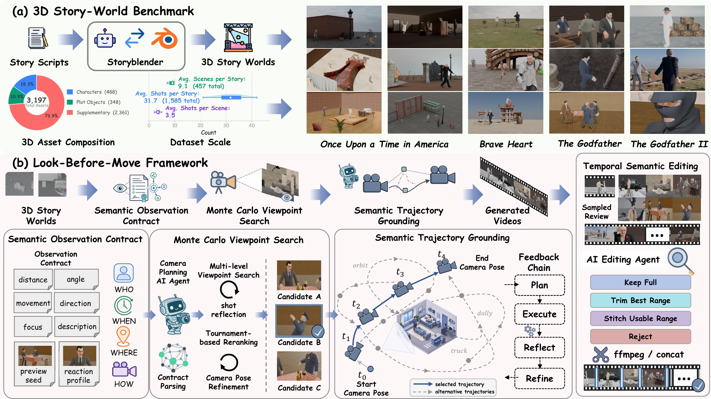
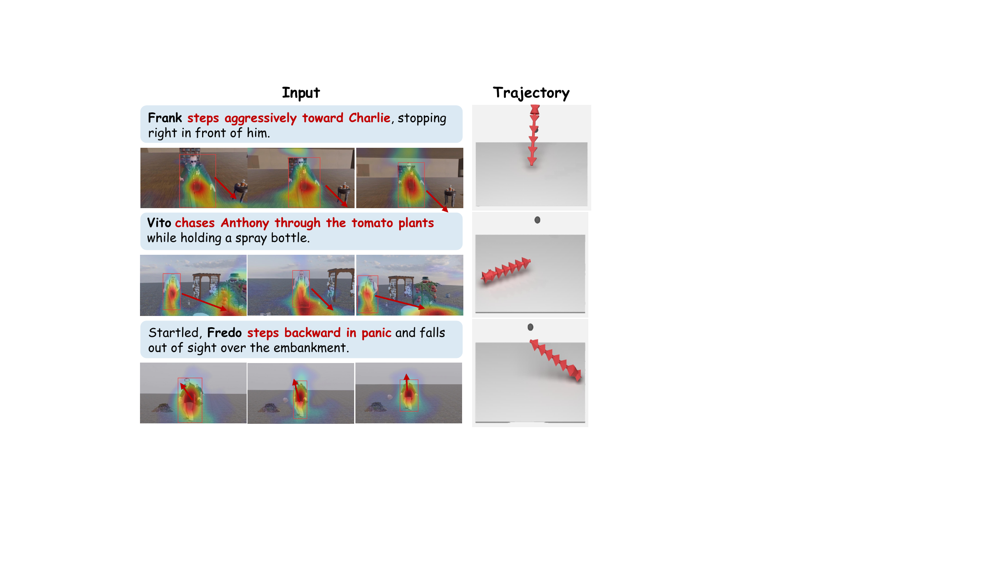
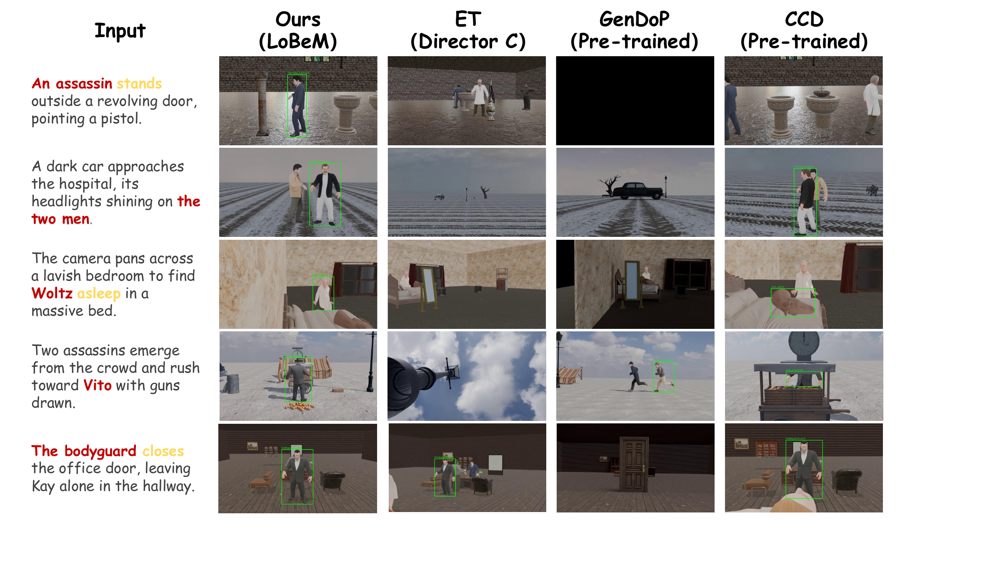

Abstract
As embodied AI and world models increasingly operate in dynamic 3D environments, visual perception must move beyond passively interpreting given observations toward actively deciding what to observe.
We study this problem through camera planning in dynamic 3D story worlds, where the camera must not only generate smooth motion, but also decide what visual evidence should be acquired before it moves. We formulate this capability as Narrative-Grounded World Visual Attention, where the camera acts as an embodied observer that determines what to observe, how to compose the observation, and how to shift attention over time under narrative intent and physical 3D constraints.
To realize this capability, we propose Look-Before-Move, a camera planning framework that separates observation specification from motion execution. It first builds a Semantic Observation Contract to convert directorial intent into executable visual constraints, then performs Monte Carlo Viewpoint Search to find narrative-compliant and geometrically feasible viewpoints, and finally applies Semantic Trajectory Grounding to connect selected viewpoints into continuous, collision-aware, and temporally coherent camera motion.
We further construct a dynamic 3D Story World Benchmark based on StoryBlender, covering 50 stories, 457 scenes, and 1585 shots with animated characters, semantic scene configurations, and executable 3D environments. Experiments show that our framework improves subject perception, intent consistency, and trajectory quality over representative baselines, demonstrating the importance of organizing visual attention before generating camera motion.
Method Overview

Overview of the benchmark construction and Look-Before-Move framework. (a) We build a dynamic 3D story-world benchmark using StoryBlender, covering narrative scripts, controllable scenes, character animations, camera annotations, and dataset statistics. (b) Look-Before-Move converts narrative intent into an observation contract, searches and refines feasible viewpoints in the executable 3D world, and grounds selected views into temporally coherent camera trajectories.
Qualitative Results

Qualitative visualization of world visual attention. Attention maps and trajectories show narrative intent grounded in evidence before execution.

Qualitative comparison on representative story segments. Rows pair narrative instructions with outputs from our method and baselines, testing subject identity, action cues, spatial context, and story-relevant framing.
Dataset
We construct a dynamic 3D Story World Benchmark based on StoryBlender, covering 50 stories, 457 scenes, and 1585 shots with animated characters, semantic scene configurations, and executable 3D environments.
The dataset release package and download instructions will be added here.
BibTeX
@misc{bian2026lookbeforemovenarrativegroundedworldvisual,
title={Look-Before-Move: Narrative-Grounded World Visual Attention in Dynamic 3D Story Worlds},
author={Jiaming Bian and Bingliang Li and Yuehao Wu and Pichao Wang and Zhi Wang and Hailan Ma and Huadong Mo and Zhenhong Sun},
year={2026},
eprint={2606.26964},
archivePrefix={arXiv},
primaryClass={cs.AI},
url={https://arxiv.org/abs/2606.26964},
}